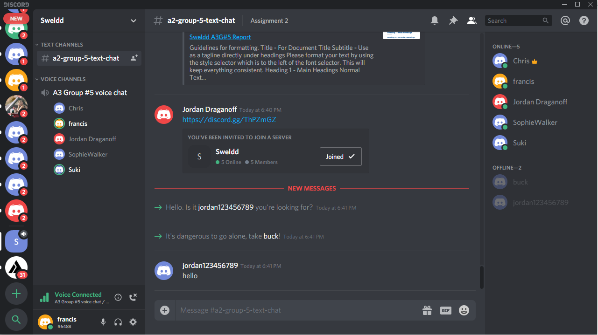

As in Assignment 2, you need to have a group website and a GitHub (or similar) repository for your group. In your report you should include a brief description of what you have done, and include the following:
- The link to your group’s website - https://sweldd.github.io/A3/
- The link to your group’s Git repository - https://github.com/Sweldd/A3
- The link to our GitHub Audit trail - https://github.com/Sweldd/A3/graphs/contributors
The audit trail on our GitHub repository does not reflect our groups work well. The audit trail suggests that our group has not fully utilised the GitHub repository for any collaborative tasks. It also reflects that only a limited number of members have actively partaken in the repository transactions. The most active participation has been undertaken in the utilisation of GitHub pages to create and deploy our group website.
Our group made a collective decision to utilise Google Docs for the majority of the assignment collaboration. We decided this due to several reasons, some of these being the ability to use the real time update capabilities while in a collaborative discussion on Discord, Google Docs could be easily accessed from the RMIT Canvas Group page, the handy comment feature in Google Docs, formatting purposes, familiarity with using this software from assignment two and other minor handy capabilities that this software provides.
The Canvas Collab site was also home to the following Google Documents created and maintained by the group:
A link to the Google Doc Report is shown below. https://docs.google.com/document/d/1Uxbv5DYQniAiGCluHNNNM3Ovs2dE_TGbppXbDv3ClRA/edit#heading=h.e6r9nq4qnawl
The intent was to create the raw report and format it in a palatable final product. Once the group had approved of this in the Google Docs report, it was to be transferred to the GitHub repository and into the GitHub pages site.
The group also utilised a chat program called Discord for all group meetings and information exchange. During our group meetings, we would join a group voice chat room in Discord and discuss our plans and progress for that meeting. These meetings were recorded in our meeting agendas using Google Docs and saved on Canvas.
An example of the Discord software is shown below:
The below link will allow you to join our Discord Server to better understand how it was used.
Discord Server
As Discord doesn’t record and save voice recordings, we created a meeting minutes document that was updated by the meeting secretary with our aim, timings, attendance, delegated taskings, roles, group discussion and any questions the group had to pose to the facilitators.
Meeting Minutes Document
https://docs.google.com/document/d/1jNytRrfRbPs1WT9eqaLbw0ibl_GE7E8Zy0DuCuZuXk4/edit?usp=sharing